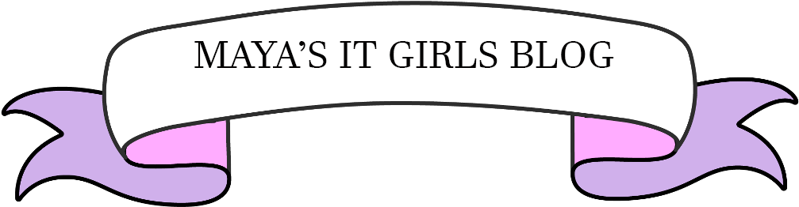

Maya Aurand is an aspiring young coder who lives in Arizona. She is interested in machine learning, AI, and software development. She has won a Regional Affiliate award for her outstanding work in code for two years in a row. She is hoping to start her own computer club this year, as well as being able to teach more girls how to code. When she's not tirelessly working as the only girl in her computer science class, she's having fun doing musical theater, volunteer work, and her own personal projects. She hopes she has the pleasure of meeting people who are just as invested as her in something.
| In the Country | Out of the Country | In Arizona |
|---|---|---|
| Syracuse, New York | Central Europe | Phoenix Convention Center |
| Washington D.C | Central America | Barrett the Honor's College |
| San Franciso | Canada | Prescott |
The video below is a tutorial for Gamemaker Studio 2. I think that making a game in this program is great for beginners (hey, it's how I started out). Make something amazing, I'm excited to see what you make!
© 2022